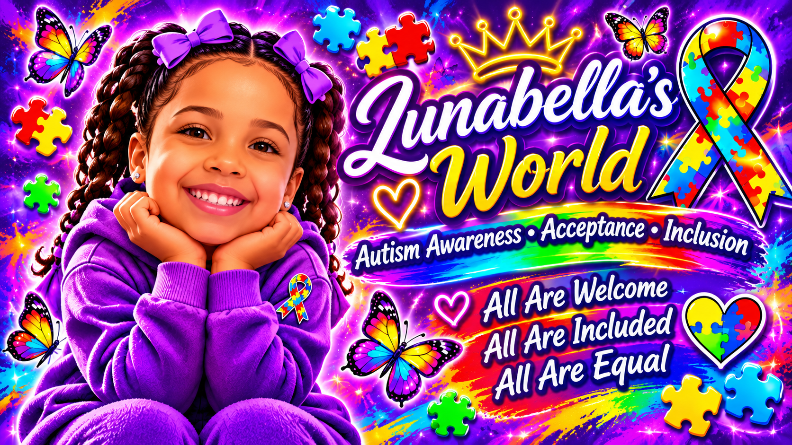

Our Inspiration
Lunabella's creativity, brightness, individuality, and joy inspired the colorful spirit of STASHUNARY. Through her, our family sees the beauty of experiencing and expressing the world in different ways.
This space is inspired by Lunabella and created with love.
Our Vision
We envision a welcoming space where autistic people and their families are respected, celebrated, and included. We believe every person deserves understanding, dignity, opportunity, and room to shine in their own way.
Awareness is a beginning. Acceptance, accessibility, and meaningful inclusion are the work we want to carry forward.
Growing Together
As Lunabella's World grows, we hope to share inclusive creative activities, helpful family resources, and opportunities to support the autism community. We want to listen to autistic voices as we build this space.
Our journey is just beginning. Everyone is welcome here.